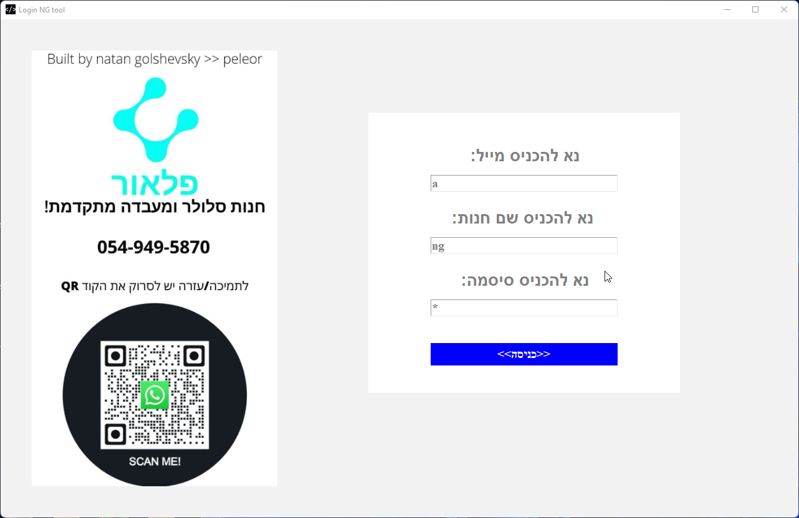
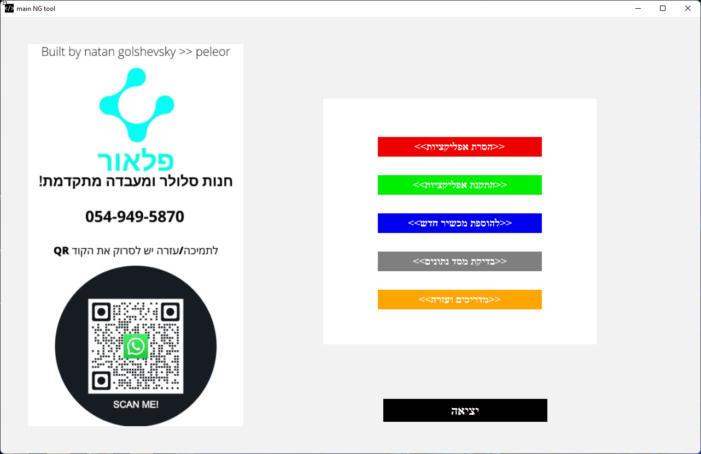
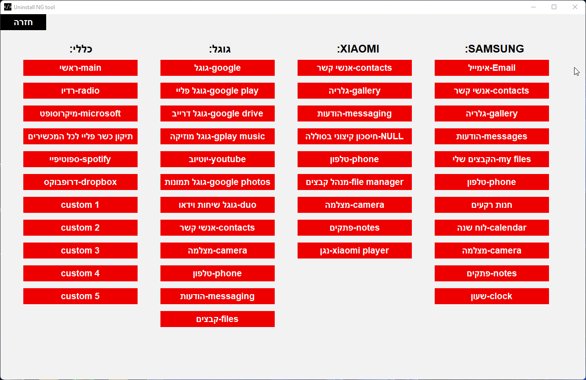
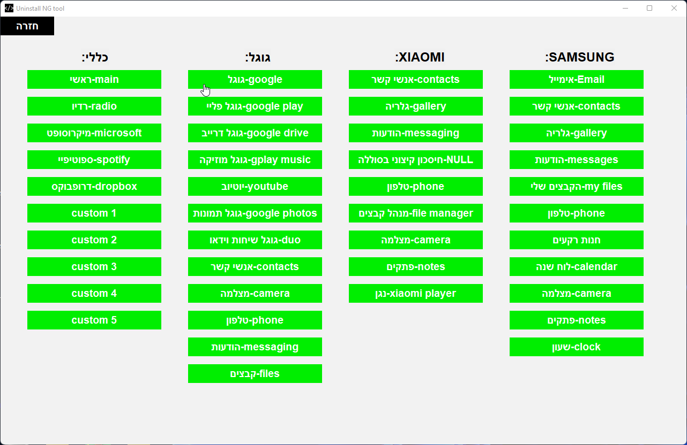
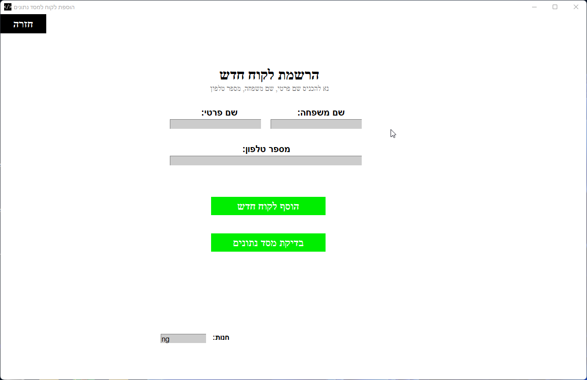
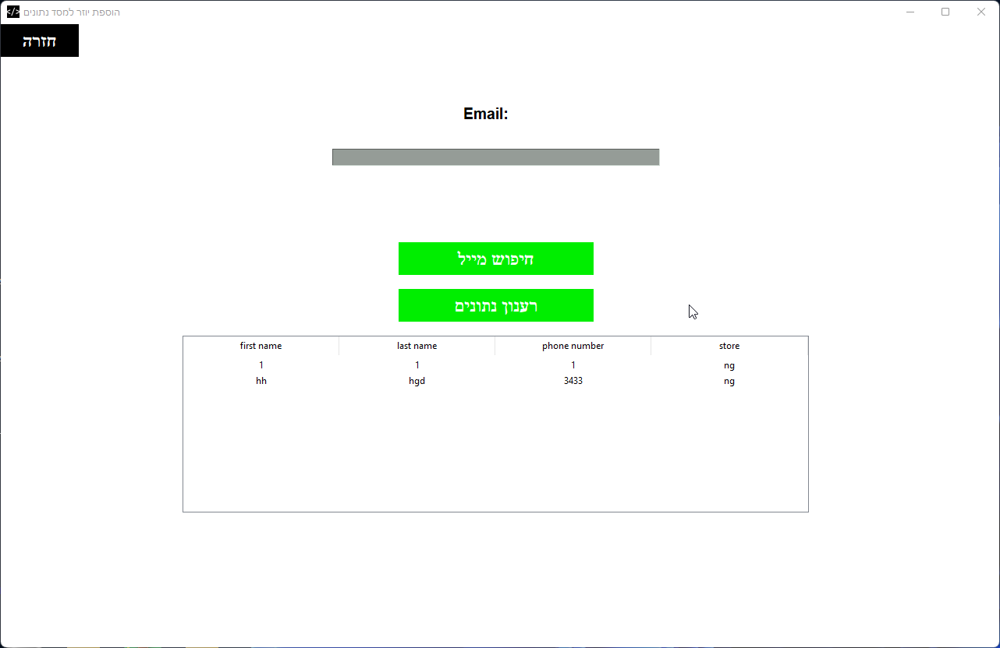

אפשרויות התוכנה:
- הסרת אפליקציות ואפליקציות מערכת.
- התקנה מחדש אפליקציות ואפליקציות מערכת.
- שמירה של פרטי כניסה באופן מקומי.
- שמירת כל נתוני המשתמשים + מערכת אימות מתקדמת עם חיבור למסד נתונים.
- מסד נתונים אישי.
- הוספת משתמשים בתהליך קצר ופשוט.
תצוגה ושימוש
מסך כניסה לתוכנה
במסך הכניסה יש להכניס אימייל, שם לקוח, סיסמה.

מסך ראשי
במסך הראשי יש לבחור מה ברצונכם לעשות

מסך הסרת אפליקציות
במסך הסרת אפליקציות יש ללחוץ על אחד הכפתורים ולהמתין להתראה מהתוכנה שהפקודה הסתיימה

מסך התקנת אפליקציות
במסך התקנת אפליקציות יש ללחוץ על אחד הכפתורים ולהמתין להתראה מהתוכנה שהפקודה הסתיימה

מסך הוספת יוזר
במסך הוספת יוזר, יש להכניס שם פרטי, שם משפחה, טלפון והתוכנה תעשה את כל השאר

מסך בדיקת מסד נתונים
במסך זה ניתן לבדוק מי נמצא במסד נתונים ומי לא